Identificação da turma
Transforme-se Front-end
TURMA
140
DIGITAL STREET
Uma turma conectada pela criatividade, tecnologia, colaboração e vontade de transformar ideias em experiências digitais.
Explorar portfólio
</CODE>
2026
FRONT-END
É CULTURA
É CULTURA
HTML
CSS
JAVASCRIPT
DESIGN
RESPONSIVIDADE
CRIATIVIDADE
HTML
CSS
JAVASCRIPT
01
Nossa identidade
QUEM
QUEM
SOMOS?
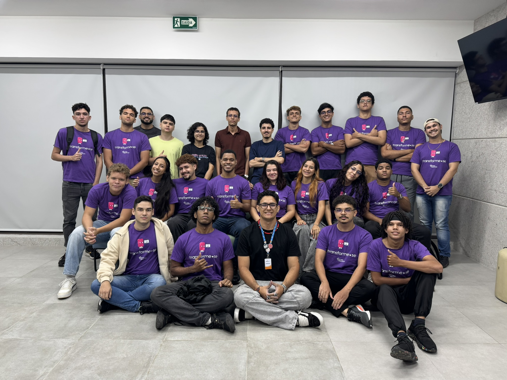
Turma 140 / Front-end
Somos a Turma 140, um coletivo de estudantes que encontrou na tecnologia uma ferramenta para criar, comunicar e transformar.
Nossa trajetória é construída por diferentes histórias, personalidades e perspectivas. Durante a formação, desenvolvemos habilidades técnicas e também aprendemos sobre colaboração, responsabilidade, criatividade e resolução de problemas.
const turma140 = {
missao: "Desenvolver soluções digitais acessíveis, criativas e funcionais.",
proposito: "Transformar conhecimento em oportunidades e gerar impacto positivo.",
identidade: "Criatividade, diversidade, colaboração, autenticidade e vontade de evoluir.",
};
TURMA
02
Conheça nossa formação
QUAL É
QUAL É
A TURMA?
A Turma 140 faz parte do programa Transforme-se, realizando uma formação voltada ao desenvolvimento Front-end.
Ano de formação
Área de desenvolvimento
Contexto da formação
A formação foi criada para preparar estudantes para os desafios do mercado de tecnologia, promovendo o aprendizado de ferramentas utilizadas na criação de interfaces para sites e aplicações.
Durante o curso, a turma participa de aulas teóricas, atividades práticas, desafios em equipe e projetos que simulam situações reais do ambiente profissional.
03
Quem conduz a caminhada
QUAIS OS
QUAIS OS
DOCENTES?
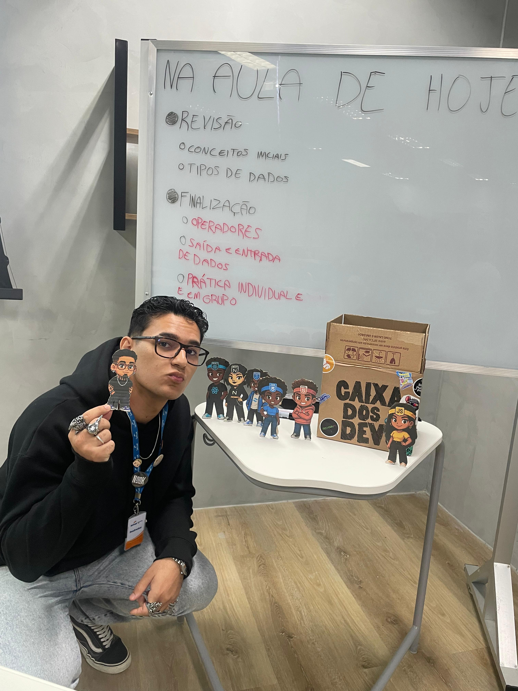
REXXPEITINHO
Docente da Turma 140
ERICK
ERICK
CARRASCO
Responsável por orientar a turma durante a jornada de formação em desenvolvimento Front-end.
Erick Carrasco atua no acompanhamento das atividades práticas e teóricas, auxiliando os estudantes na compreensão dos conteúdos e na construção dos projetos.
Sua participação na turma contribui para o desenvolvimento técnico, profissional e colaborativo dos estudantes, incentivando a autonomia, a criatividade e a busca constante por conhecimento.
Orientação
Front-end
Mentoria
Projetos
AMORES
Docente da Turma 140
JULIANA
JULIANA
COSTA
Responsável por orientar a turma durante a jornada de formação em educação financeira.
Juliana Costa atua no acompanhamento das atividades de Educação Financeira, auxiliando os estudantes na compreensão dos conteúdos e na aplicação dos conhecimentos no dia a dia.
Sua participação contribui para o desenvolvimento da organização financeira, do pensamento crítico e da autonomia dos estudantes, incentivando escolhas mais conscientes e responsáveis
Orientação
Finanças
Mentoria
Organização
T
04
Transforme-se
QUAL O
QUAL O
CURSO?
Formação em
FRONT-
FRONT-
END
TRF / 140 / DEV
O curso Transforme-se Front-end apresenta os fundamentos necessários para a criação de páginas e interfaces digitais modernas.
A formação combina tecnologia, design, lógica e criatividade. Os estudantes aprendem a estruturar conteúdos, estilizar interfaces e implementar comportamentos interativos.
Perfil profissional desenvolvido
- Desenvolver páginas utilizando HTML e CSS.
- Criar interfaces adaptáveis para computadores e celulares.
- Aplicar fundamentos de lógica de programação.
- Implementar interatividade com JavaScript.
- Trabalhar de maneira colaborativa em projetos.
- Organizar e apresentar um portfólio profissional.
05
Unidades curriculares
GRADE
GRADE
CURRICULAR
Organização dos principais conhecimentos desenvolvidos durante a formação.
Operar sistemas operacionais e aplicativos de escritório
Operação de sistemas .
Desenvolver sistemas de informação
Desenvolvimento de sistemas.
Elaborar porjetos de aplicação para web
Projetos de aplicação web.
Desenvolver aplicações para websites
Desenvolvimento de websites.
Codificar Front-End de aplicação web
Codificação Front-End.
Publicar aplicação web
Publicação de aplicações.
Projeto integrador Desenvolvedor Front-End
Projeto integrador Front-End.
06
Caminho de evolução
ROADMAP DE
ROADMAP DE
FORMAÇÃO
01
Primeira etapa
Descoberta
Introdução à tecnologia e conhecimento das possibilidades profissionais.
02
Segunda etapa
Fundamentos
Desenvolvimento da lógica e compreensão da estrutura de uma página.
03
Terceira etapa
Construção
Criação de interfaces utilizando HTML, CSS e design responsivo.
04
Quarta etapa
Interação
Aplicação do JavaScript para adicionar funcionalidades aos projetos.
05
Quinta etapa
Portfólio
Organização dos projetos e preparação para novas oportunidades.
Galeria de Fotos
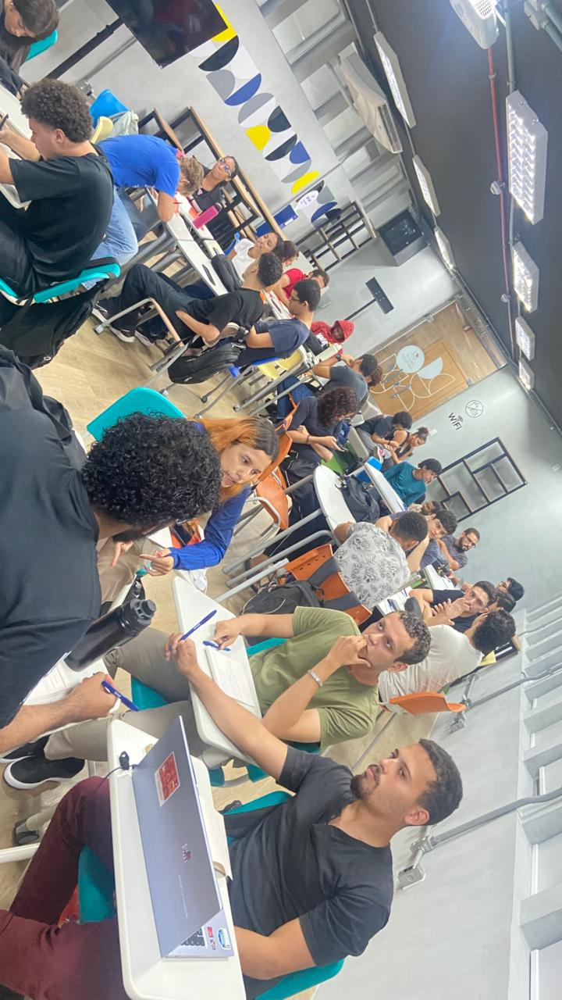
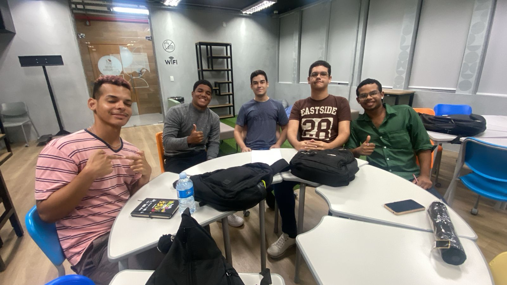
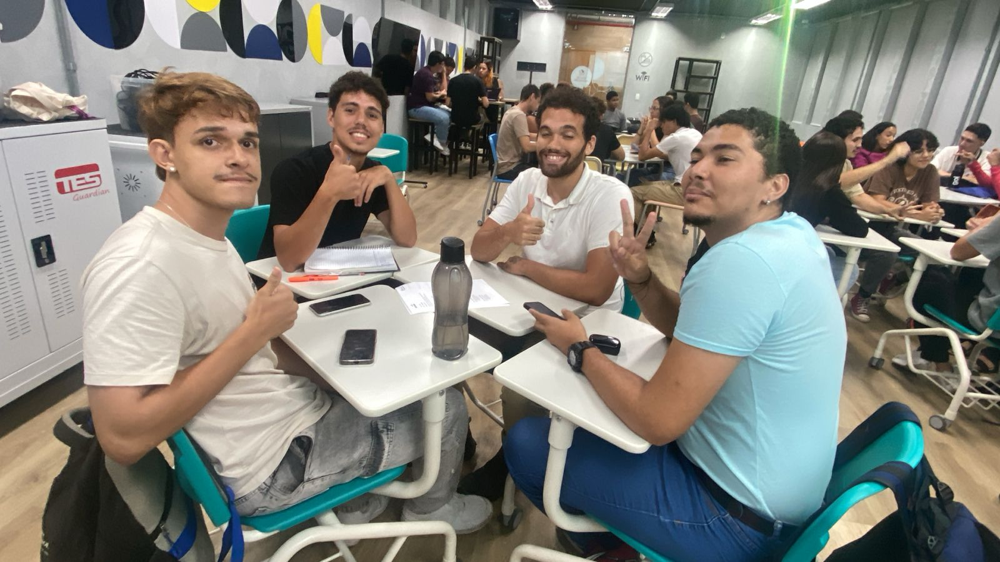
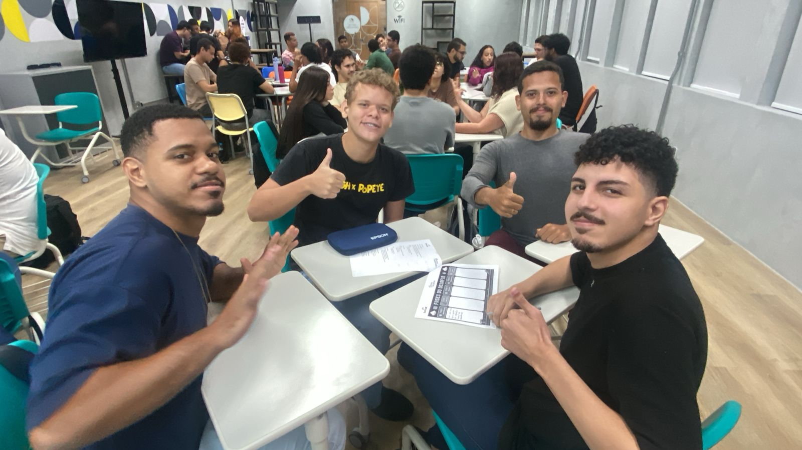
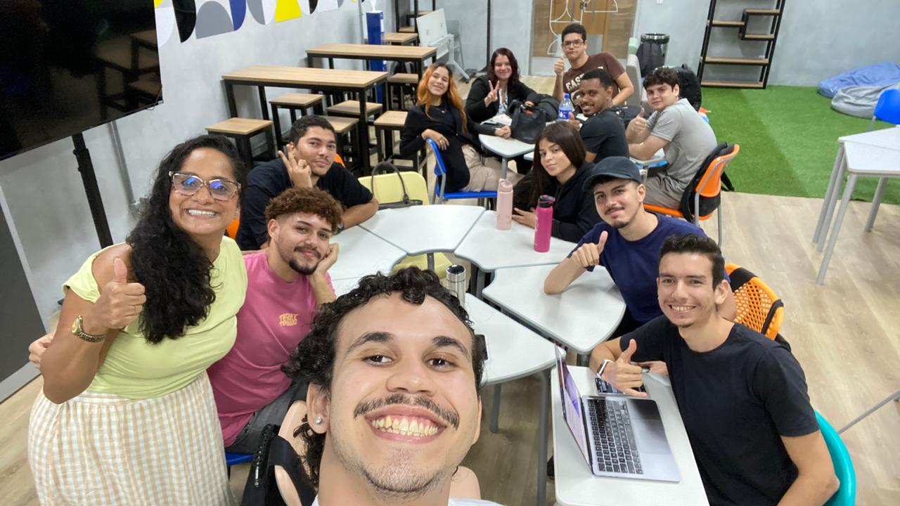
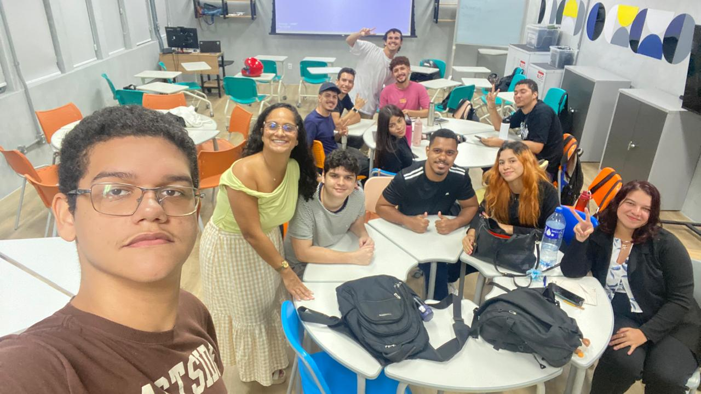
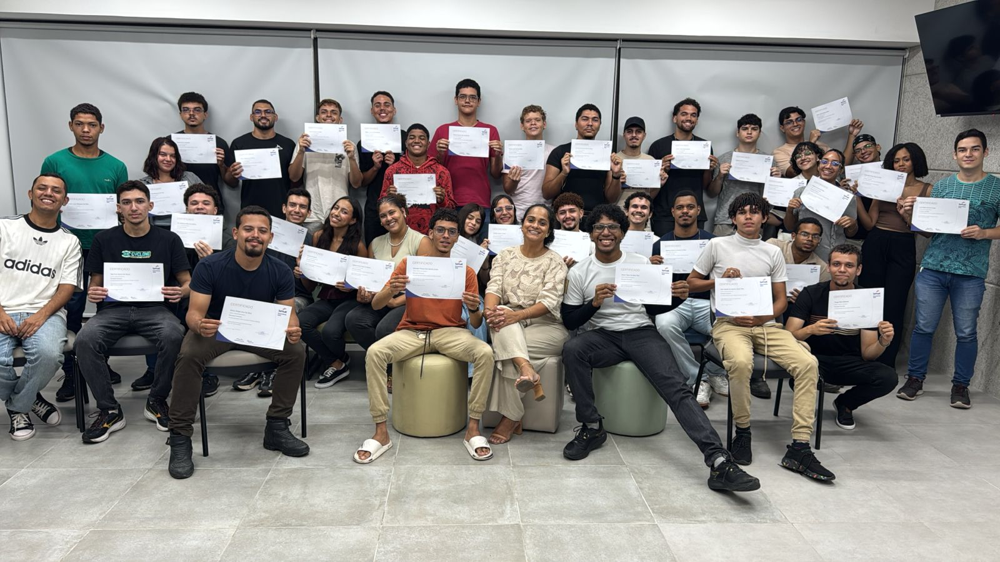
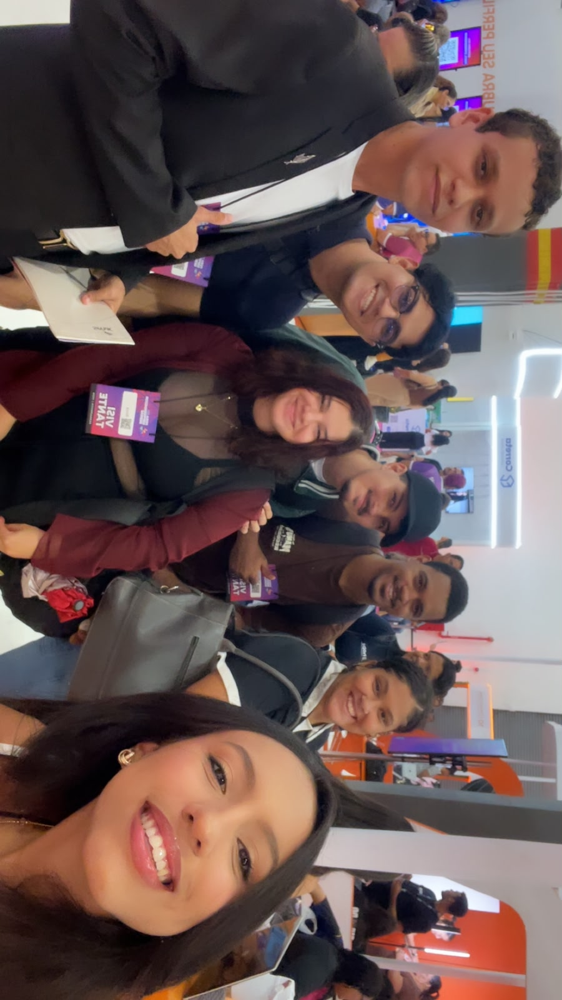
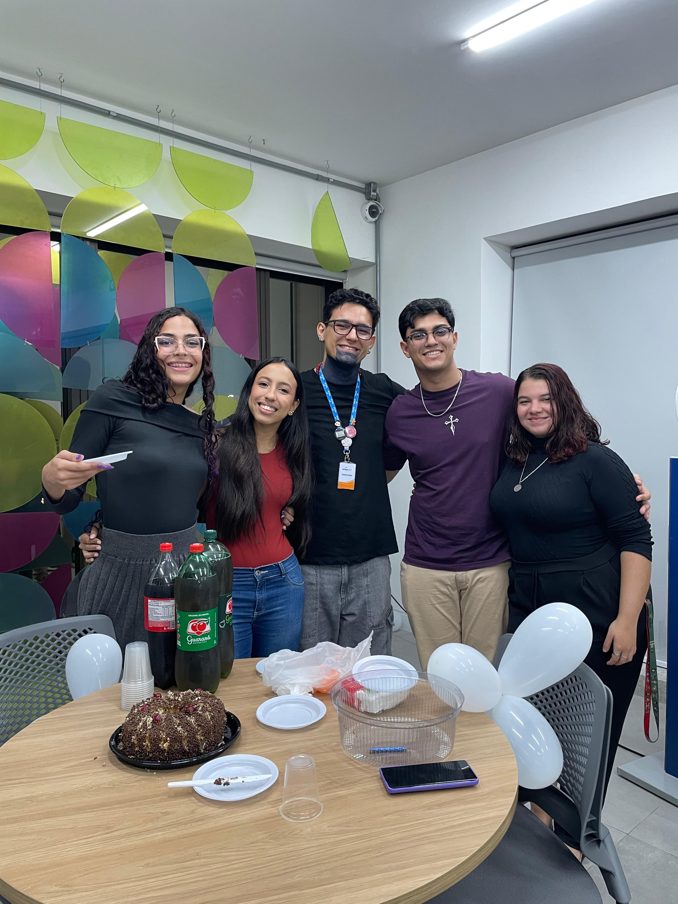
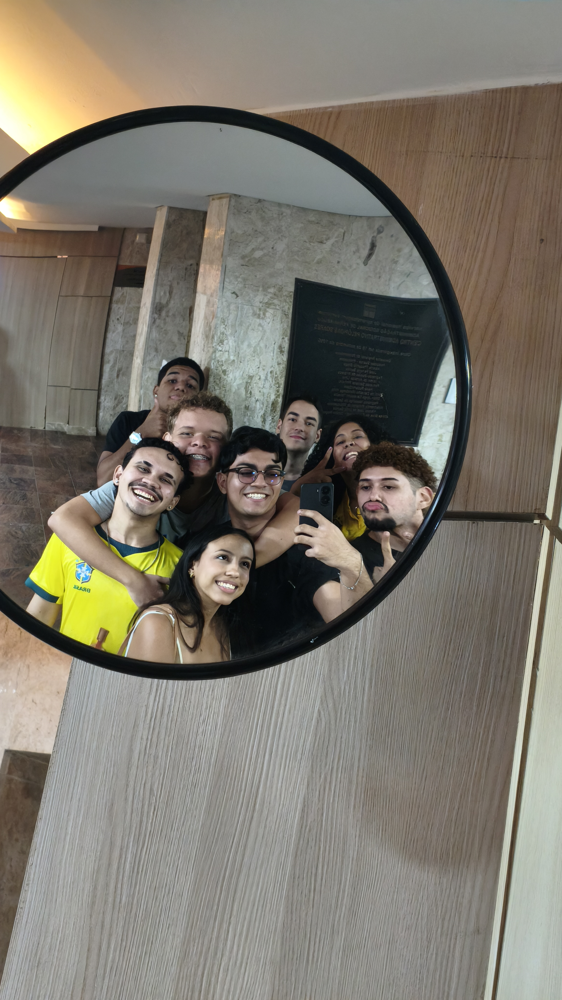
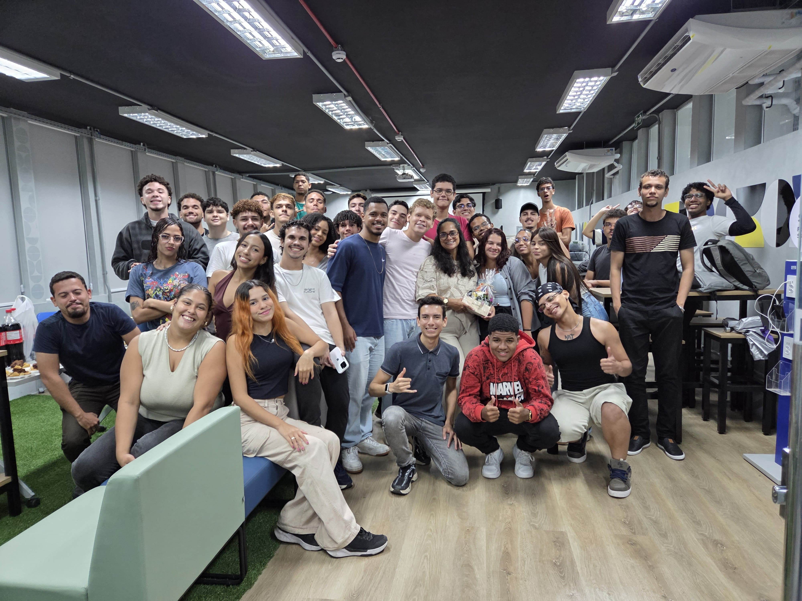
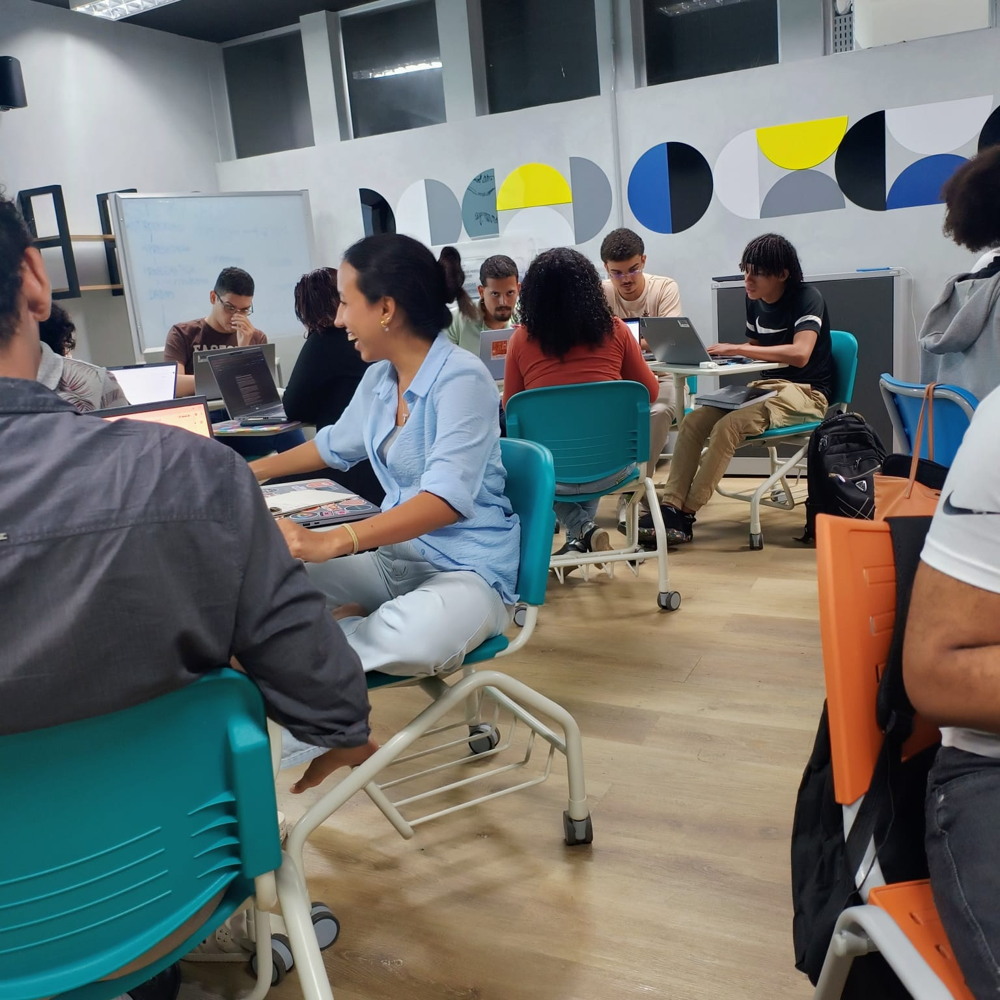
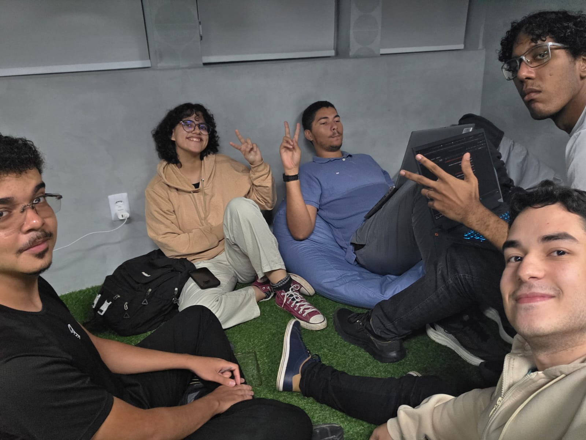
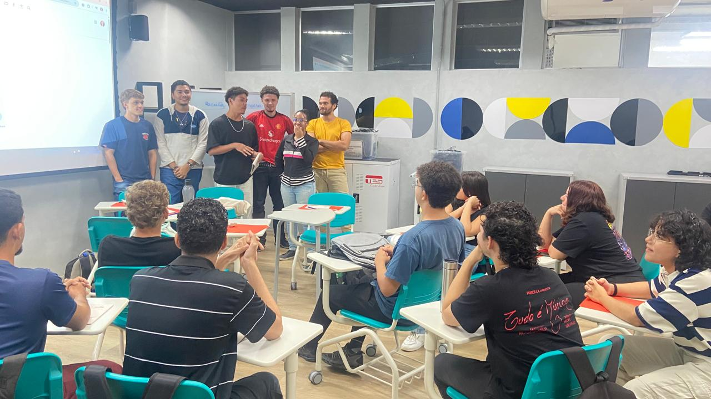
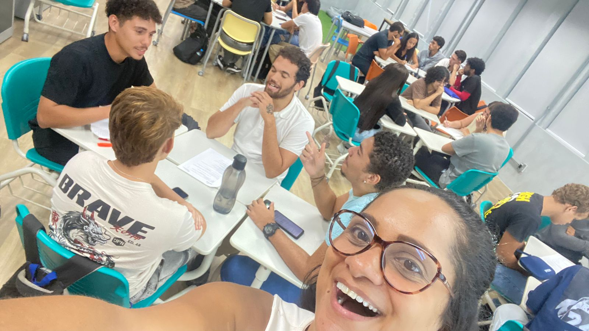